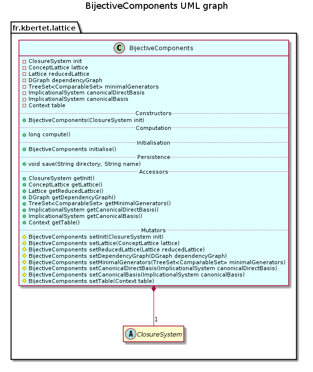

public class BijectiveComponents extends Object
This class generates bijective components issued from lattice theory for a specified closure system.
Bijective components are: closed set lattice or concept lattice, reduced lattice, reduced context, canonical direct basis, minimal generators and canonical basis, dependency graph.
A closure system is described by the abstract class ClosureSystem. In this package, a closure system can be instancied by an implicational system described by class ImplicationalSystem) or a context described by class Context).
This class provides a constructor, and only two methods: the method compute() generates all the bijective components of the specified closure system; and the method save(java.lang.String, java.lang.String) saves theses components in files.
This class can be used as follows:
BijectiveComponents bc = new BijectiveComponents(initialClosureSystem);
bc.compute();
bc.save(dirString,nameString);

| Constructor and Description |
|---|
BijectiveComponents(ClosureSystem closureSystem)
Constructs this component with the specified Closure System as initial closure system.
|
| Modifier and Type | Method and Description |
|---|---|
long |
compute()
Generates all the bijective components included in this component issued from the initial closure system
closureSystem. |
ImplicationalSystem |
getCanonicalBasis()
Returns the canonical basis of this component.
|
ImplicationalSystem |
getCanonicalDirectBasis()
Returns the canonical direct basis of this component.
|
ClosureSystem |
getClosureSystem()
Returns the closure system of this component.
|
DGraph |
getDependencyGraph()
Returns the dependency graph of this component.
|
ConceptLattice |
getLattice()
Returns the lattice of this component.
|
TreeSet<ComparableSet> |
getMinimalGenerators()
Returns the minimal generators of this component.
|
Lattice |
getReducedLattice()
Returns the reduced lattice of this component.
|
Context |
getTable()
Returns the Table of this component.
|
BijectiveComponents |
initialise(ClosureSystem closureSystem)
Initialise the closure system.
|
void |
save(String directory,
String name)
Saves all the bijective components included in this component in files saved in the specified directory.
|
protected BijectiveComponents |
setCanonicalBasis(ImplicationalSystem canonicalBasis)
Set the canonical basis of this component.
|
protected BijectiveComponents |
setCanonicalDirectBasis(ImplicationalSystem canonicalDirectBasis)
Set the canonical direct basis of this component.
|
protected BijectiveComponents |
setClosureSystem(ClosureSystem closureSystem)
Set the closure system of this component.
|
protected BijectiveComponents |
setDependencyGraph(DGraph dependencyGraph)
Set the dependency graph of this component.
|
protected BijectiveComponents |
setLattice(ConceptLattice lattice)
Set the lattice of this component.
|
protected BijectiveComponents |
setMinimalGenerators(TreeSet<ComparableSet> minimalGenerators)
Set the minimal generators of this component.
|
protected BijectiveComponents |
setReducedLattice(Lattice reducedLattice)
Set the reduced lattice of this component.
|
protected BijectiveComponents |
setTable(Context table)
Set the Table of this component.
|
public BijectiveComponents(ClosureSystem closureSystem)
Constructs this component with the specified Closure System as initial closure system.
closureSystem - initial closure systempublic BijectiveComponents initialise(ClosureSystem closureSystem)
Initialise the closure system.
closureSystem - initial closure systempublic long compute()
Generates all the bijective components included in this component issued from the initial closure system closureSystem.
The closed set lattice is generated and obtained by
this.getClosureSystem().lattice();
The reduced lattice is obtained by
this.getLattice().getIrreduciblesReduction();
The reduced table is obtained by
this.getReducedLattice().getTable();
The dependency graph is obtained by
this.getReducedLattice().getDependencyGraph();
Minimal generators are obtained by
this.getReducedLattice().getMinimalGenerators();
The canonical direct basis is obtained by
this.getReducedLattice().getCanonicalDirectBasis();
The canonical basis is obtained by
(new ImplicationalSystem(this.canonicalDirectBasis)).makeCanonicalBasis();
public void save(String directory, String name) throws IOException
Saves all the bijective components included in this component in files saved in the specified directory. A global description is saved in file name+"Readme.txt".
The specified name is used to defined a name for each file.
directory - location to save filename - name of the filesIOException - When an IOException occurspublic ClosureSystem getClosureSystem()
Returns the closure system of this component.
protected BijectiveComponents setClosureSystem(ClosureSystem closureSystem)
Set the closure system of this component.
closureSystem - used to define field of this componentpublic ConceptLattice getLattice()
Returns the lattice of this component.
protected BijectiveComponents setLattice(ConceptLattice lattice)
Set the lattice of this component.
lattice - used to define field of this componentpublic Lattice getReducedLattice()
Returns the reduced lattice of this component.
protected BijectiveComponents setReducedLattice(Lattice reducedLattice)
Set the reduced lattice of this component.
reducedLattice - used to define field of this componentpublic DGraph getDependencyGraph()
Returns the dependency graph of this component.
protected BijectiveComponents setDependencyGraph(DGraph dependencyGraph)
Set the dependency graph of this component.
dependencyGraph - used to define field of this componentpublic TreeSet<ComparableSet> getMinimalGenerators()
Returns the minimal generators of this component.
protected BijectiveComponents setMinimalGenerators(TreeSet<ComparableSet> minimalGenerators)
Set the minimal generators of this component.
minimalGenerators - used to define field of this componentpublic ImplicationalSystem getCanonicalDirectBasis()
Returns the canonical direct basis of this component.
protected BijectiveComponents setCanonicalDirectBasis(ImplicationalSystem canonicalDirectBasis)
Set the canonical direct basis of this component.
canonicalDirectBasis - used to define field of this componentpublic ImplicationalSystem getCanonicalBasis()
Returns the canonical basis of this component.
protected BijectiveComponents setCanonicalBasis(ImplicationalSystem canonicalBasis)
Set the canonical basis of this component.
canonicalBasis - used to define field of this componentpublic Context getTable()
Returns the Table of this component.
protected BijectiveComponents setTable(Context table)
Set the Table of this component.
table - used to define field of this componentCopyright © 2010–2014 Karell Bertet. All rights reserved.